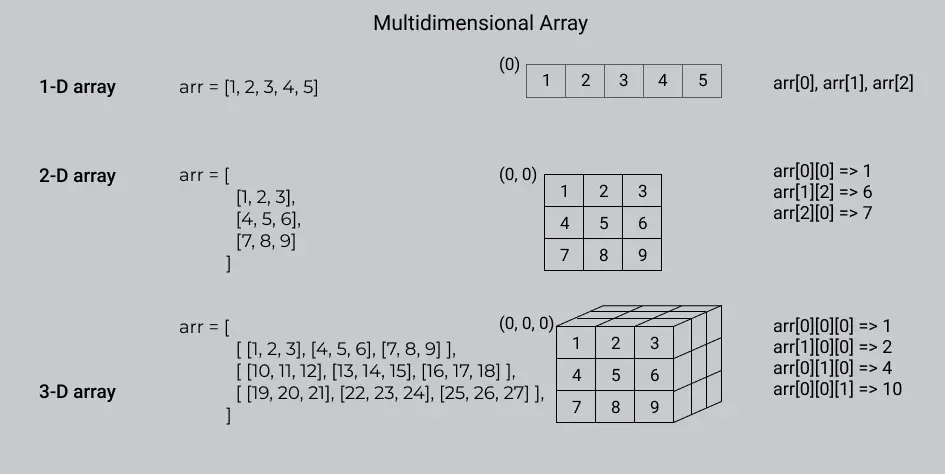

Basic
Day-1 (Date: 7-4-2023)
Why Binary not Decimal
Computers use binary numbers instead of decimal numbers because binary is well-suited for electronic systems and digital processing. Here are a few reasons why binary is preferred over decimal in computer systems: 1. Simplicity of representation: Binary numbers consist of only two digits, 0 and 1, which aligns well with the on/off states of electronic switches (transistors). This simplicity makes it easier to design and implement digital circuits. 2. Hardware compatibility: The internal components of computers, such as logic gates and memory cells, are designed to work with binary signals. Using binary allows for direct compatibility and seamless integration with the underlying electronic hardware. 3. Reliability and noise resistance: Binary signals are more robust against noise and interference. The distinction between the binary digits 0 and 1 is easier to maintain in electronic circuits, reducing the chances of errors due to signal distortion. 4. Efficiency in storage: Binary numbers require fewer bits to represent the same value compared to decimal numbers. This efficiency in storage is crucial for memory and storage devices, as it allows for more information to be stored using the same amount of physical resources. 5. Logical operations: Binary numbers lend themselves well to logical operations like AND, OR, and NOT. These operations form the basis of computational operations in computers. Using binary simplifies the design and implementation of logical circuits and arithmetic units. Although decimal numbers are more intuitive for human comprehension, they are not as efficient or compatible with the underlying electronic components and operations performed within computers. Binary numbers, while requiring a mental shift for human users, provide a highly efficient and reliable system for representing and manipulating information in computer systems.
Number System
1.Binary - Two base number.
2.Octal - Eight base number.
2.Decimal - Ten base number.
2.Hexadecimal - Sixteen base number.
Binary to Decimal
 function convertToDecimal(x) {
let bin = 0;
let rem, i = 1, step = 1;
while (x != 0) {
rem = x % 10;
x = parseInt(x / 10);
bin = bin + rem * i;
i = i * 2;
}
console.log(`Decimal: ${bin}`);
}
// take input
//let number = prompt('Enter a Binary number: ');
convertToDecimal(101);
function convertToDecimal(x) {
let bin = 0;
let rem, i = 1, step = 1;
while (x != 0) {
rem = x % 10;
x = parseInt(x / 10);
bin = bin + rem * i;
i = i * 2;
}
console.log(`Decimal: ${bin}`);
}
// take input
//let number = prompt('Enter a Binary number: ');
convertToDecimal(101);
Decimal to Binary
 Other way - decimal 75
75 >= 64 = 1
75 - 64 = 11
32 >= 11 = 0
16 >= 11 = 0
11 >= 8 = 1
11 - 8 = 3
3 >= 2 = 1
3 - 2 = 0
1 >= 1 = 1
64 = 1
32 = 0
16 = 0
8 = 1
4 = 0
2 = 1
1 = 1
75 = 1001011
function convertToBinary(x) {
let bin = 0;
let rem, i = 1, step = 1;
while (x != 0) {
rem = x % 2;
console.log(
`Step ${step++}: ${x}/2, Remainder = ${rem}, Quotient = ${parseInt(x/2)}`
);
x = parseInt(x / 2);
bin = bin + rem * i;
i = i * 10;
}
console.log(`Binary: ${bin}`);
}
// take input
//let number = prompt('Enter a decimal number: ');
convertToBinary(5);
Other way - decimal 75
75 >= 64 = 1
75 - 64 = 11
32 >= 11 = 0
16 >= 11 = 0
11 >= 8 = 1
11 - 8 = 3
3 >= 2 = 1
3 - 2 = 0
1 >= 1 = 1
64 = 1
32 = 0
16 = 0
8 = 1
4 = 0
2 = 1
1 = 1
75 = 1001011
function convertToBinary(x) {
let bin = 0;
let rem, i = 1, step = 1;
while (x != 0) {
rem = x % 2;
console.log(
`Step ${step++}: ${x}/2, Remainder = ${rem}, Quotient = ${parseInt(x/2)}`
);
x = parseInt(x / 2);
bin = bin + rem * i;
i = i * 10;
}
console.log(`Binary: ${bin}`);
}
// take input
//let number = prompt('Enter a decimal number: ');
convertToBinary(5);
Decimal to Octal
 function convertToCOtalTOdecimal(x) {
let bin = 0;
let rem, i = 1, step = 1;
while (x != 0) {
rem = x % 8;
x = parseInt(x / 8);
bin = bin + rem * i;
i = i * 10;
}
console.log(`Octal: ${bin}`);
}
// take input
//let number = prompt('Enter a Decimal number: ');
convertToCOtalTOdecimal(8);
function convertToCOtalTOdecimal(x) {
let bin = 0;
let rem, i = 1, step = 1;
while (x != 0) {
rem = x % 8;
x = parseInt(x / 8);
bin = bin + rem * i;
i = i * 10;
}
console.log(`Octal: ${bin}`);
}
// take input
//let number = prompt('Enter a Decimal number: ');
convertToCOtalTOdecimal(8);
Octal to Decimal
 function convertToDecimalTOOCatal(x) {
let bin = 0;
let rem, i = 1, step = 1;
while (x != 0) {
rem = x % 10;
x = parseInt(x / 10);
bin = bin + rem * i;
i = i * 8;
}
console.log(`Decimal: ${bin}`);
}
// take input
//let number = prompt('Enter a Octal number: ');
convertToDecimalTOOCatal(100);
function convertToDecimalTOOCatal(x) {
let bin = 0;
let rem, i = 1, step = 1;
while (x != 0) {
rem = x % 10;
x = parseInt(x / 10);
bin = bin + rem * i;
i = i * 8;
}
console.log(`Decimal: ${bin}`);
}
// take input
//let number = prompt('Enter a Octal number: ');
convertToDecimalTOOCatal(100);
DIFFERENT BETWEEM INTERPRETER AND COMPILAR
A compiler translates the entire source code in a single run. An interpreter translates the entire source code line by line#KEYWORDS
1. High level Language > INTERPRETER(Work line by line) > Machine Language 2. Assembly language > Assembler > Machine Language 3. Mid level language ( C ) 4. High level language(python, c++, c# etc) 5. compiler(GNU, CSS) - A compiler translates the entire source code in a single run 6. CodeBlocks(IDE-Integrated Development Environment)Learn About Compiler and C/C++
Day-2 (Date: 7-6-2023)
Watch some videos read some documents about how compiler works
Book(Bangla) - COMPUTER PROGRAMMING TAMIM SHAHRIAR SHUBEEN (Language C) Book(English) - PROGRAMMING IN C - STEPHEN G.COCHAN (Language C)MEMORY
Int (32bit) = {
2 byte = 2 x 8 bit
= 16 bit
}
Int(64bit) = {
4 byte = 4 x 8 bit
= 32 bit
}
32 bit maximum number = 2^n - 1
= 2^31 - 1
HOW TO STORE NEGATIVE AND POSITIVE NUMBER IN MEMORY
#Sign bit
0 -> Positive
1 -> Negative
MSB = Most Significant Bit
LSB = Most Significant Bit
 In this case in magnitude area first number is MSB and last number is LSB.
In this case in magnitude area first number is MSB and last number is LSB.
PROBLEM OF SIGN BIT
0 0 0 0 !== 1 0 0 0
+0 !== -0
#SOLVE
0011 = +3
=> 1100(flip of 0011) = 1's complement
1's complement + 1
1100 + 1 = 1101 = -2 (2's complement)
0010 + 1 = +3 (2's complement)
#In this case computer can store 4bit.
1111 + 1 = 10000
so, answer = 0000 = -0
#KEYWORDS
CodeBlocks,Environment setup,terminal,GCC,cmd
Bit Manipulaion
Day-2 (Date: 7-5-2023)
Bit manipulation is a technique used in computer programming to manipulate individual bits within a binary representation of data. It involves
performing logical and arithmetic operations at the bit level, allowing developers to perform various tasks efficiently and compactly. Here are some
commonly used bit manipulation operations:
1. Bitwise AND (&): Performs a logical AND operation on each corresponding pair of bits.
The result is 1 if both bits are 1; otherwise, it is 0.
Example:
```
10101010 &
11001100
---------
10001000
```
3. Bitwise OR (|): Performs a logical OR operation on each corresponding pair of bits.
The result is 1 if either of the bits is 1; otherwise, it is 0.
Example:
```
10101010 |
11001100
---------
11101110
```
4. Bitwise XOR (^): Performs a logical XOR (exclusive OR) operation on each corresponding pair of bits.
The result is 1 if the bits are different; otherwise, it is 0.
Example:
```
10101010 ^
11001100
---------
01100110
```
5. Bitwise NOT (~): Flips the bits of a binary number. The result is the one's complement of the number.
Example:
```
~10101010
---------
01010101
```
6. Bitwise left shift (<<): Shifts the bits of a number to the left by a specified number of positions.
This operation effectively multiplies the number by 2 raised to the power of the shift amount.
Example:
```
10101010 << 2
-------------
1010101000
```
7. Bitwise right shift (>>): Shifts the bits of a number to the right by a specified number of positions.
This operation effectively divides the number by 2 raised to the power of the shift amount.
Example:
```
10101010 >> 2
-------------
00101010
```
Bit manipulation is often used in various applications, such as optimizing code, implementing data structures,
and working with low-level operations like device drivers, network protocols, and cryptography algorithms.
It allows for compact representation of data and efficient bitwise operations that can significantly improve
performance in certain scenarios.
#Example of bit off or on test
let x,y,z;
x = parseInt(prompt("Inter number ", y));
bit = parseInt(prompt("Inter bit number ", z));
if(x & (1 << bit)){
console.log(`${bit} nd bit is ON`);
}else{
console.log(`${bit} nd bit is OFF`);
}
IF ELSE LOOP
Day-3 (Date: 7-8-2023)
IF ELSE
if (test expression) {
// run code if test expression is true
}
else if(test expression){
// run code if test expression is true
}
else {
// run code if test expression is false
}
FOR
for (initializationStatement; testExpression; updateStatement){
// statements inside the body of loop
}
WHILE
while(condition) {
statement(s);
}
DO-WHILE
do {
// the body of the loop
}
while (testExpression);
NESTED LOOP
Day-4 (Date: 7-9-2023)
Left Triangle Pattern
*
* *
* * *
#js
let n=3
let string = "";
for(let l = 0; l < n; l++){
for(let i = 0; i <= l ; i++){
string += "* "
}
string += "\n";
}
console.log(string);
#C
#include
int main() {
int n=3;
for(int l = 0; l < n; l++){
for(int i = 0;i <= l; i++){
printf("* ");
}
printf("\n");
}
return 0;
}
Reverse Left Triangle Pattern
* * *
* *
*
#JS
let n = 3;
let string = "";
for (let i = n; i >= 1; i--) {
for (let j = 0; j < i; j++) {
string += "* ";
}
string += "\n";
}
console.log(string);
#C
#include
int main() {
int n=3;
for(int l = n; l >= 1; l--){
for(int i = 0;i < l; i++){
printf("* ");
}
printf("\n");
}
return 0;
}
Right Triangle Pattern
* * *
* *
*
#JS
let n = 3;
let string = "";
for (let i = 0; i < n; i++) {
for (let j = 0; j < i; j++) {
string += " ";
}
for (let x = 0; x < n-i; x++) {
string += "*";
}
string += "\n";
}
console.log(string);
#C
#include
int main() {
int n=3;
for(int l = 0; l < n; l++){
for(int i = 0;i < l; i++){
printf(" ");
}
for(int star = 0; star < n-l; star++){
printf("*");
}
printf("\n");
}
return 0;
}
SWITCH-STATEMENT AND ARRAY
Day-4 (Date: 7-11-2023)
Structure
switch(variable){
case value 1;
//statement
break;
case value 2;
//statement
break;
#Example
console.log("1.User login\n 2.User list\n 3.Sign up\n");
let op;
let answer = parseInt(prompt("which option to choese? ", op));
switch(answer){
case 1:
console.log("User login successful\n");
break;
case 2:
console.log("User list shown\n");
break;
case 3:
console.log("Sign up done\n");
break;
default:
console.log("Inter number 1 to 3\n");
}
}
Array
In computer programming, an array is a data structure that stores a fixed-size sequence of elements of the same type. It is a collection of variables, each identified by an index or a key, that can be accessed individually. The elements in an array are typically stored in contiguous memory locations, which allows for efficient access and manipulation of the data. Arrays are commonly used to store collections of related data, such as a list of numbers, strings, or objects. The index of an array starts from zero, so the first element is accessed using index 0, the second element with index 1, and so on. Arrays can be one-dimensional, two-dimensional, or multi-dimensional depending on the number of indices needed to access the elements. A one-dimensional array is like a simple list, while a two-dimensional array is like a table with rows and columns. Multi-dimensional arrays can have more than two dimensions and are used to represent complex data structures. Arrays provide an efficient way to store and retrieve large amounts of data and are a fundamental concept in many programming languages. They offer benefits such as random access to elements, constant time access (assuming the index is known), and support for various operations like sorting, searching, and iterating over the elements.Data type array name[size] = [Elements]

#Example of input array
#include
int main() {
printf("Input array index: ");
int i=0, n;
scanf("%d", &n);
int ara[n];
printf("Input array: ");
for(int idx = 0; idx < n; idx++){
scanf("%d", &ara[idx]);
}
printf("Displaying integers: ");
for(int idx = 0; idx < n; idx++){
printf("%d,", ara[idx]);
}
return 0;
}
Brace Initializer
The brace initializer, also known as initializer list syntax, is a way to initialize the elements of an array in many programming languages, including C++, Java, and JavaScript. It allows you to provide a list of values enclosed in braces { }, which are used to populate the array with the specified values.Here's an example in C++:
int myArray[] = {1, 2, 3, 4, 5};
In this example, we declare an integer array called `myArray` and initialize it with the values 1, 2, 3, 4, and 5 using the brace initializer.
The number of elements in the array is determined by the number of values provided within the braces.
The brace initializer can also be used for multi-dimensional arrays.
Here's an example of a 2D array:
int myArray2D[][3] = {{1, 2, 3}, {4, 5, 6}};
In this case, we declare a 2D integer array called `myArray2D` with two rows and three columns. We use the brace initializer to provide the values for
each row.
The inner braces are used to specify the values for each row, and the outer braces encompass the entire initializer list.
The brace initializer syntax can be handy when you want to quickly initialize an array with a known set of values.
It eliminates the need for individual assignments to each element of the array and provides a concise and readable way to
initialize the array elements directly within the declaration statement.
# If you specify the value for the array index it will replace the garbage value into 0.
#Example
#include
int main() {
int ara[10]= {1,2,3,4,5};
int value = sizeof(ara)/ sizeof(ara[0]);
printf("Displaying integers: ");
for(int idx = 0; idx < value; idx++){
printf("%d ", ara[idx]);
}
return 0;
}
Or use memset,
#include
#include
int main() {
printf("Input array index: ");
int MXN = 100;
int ara[MXN];
memset(ara, 0, sizeof ara);
printf("Displaying integers: ");
for(int i = 0; i < MXN; i++){
printf("%d ", ara[i]);
}
return 0;
}
#note memsent works on three value.
1. memset(arrayName, 0, sizeof arrayName);
2. memset(arrayName, -1, sizeof arrayName);
3. memset(arrayName, 0x3f3f3f3f, sizeof arrayName); (Infinity Number = 0x3f3f3f3f);
Memeset Library
The `memset` function is a standard C library function that is used to set a block of memory with a specified value. It takes three arguments: a pointer to the memory block, the value to be set, and the number of bytes to set. The `memset` function works well when you need to set memory blocks with values such as 0 or -1. However, it may not work as expected when you try to set memory blocks with values other than 0 or -1. The reason for this limitation is that `memset` operates on a byte level and sets each byte of the memory block to the specified value. If the desired value is not representable in a single byte, the behavior of `memset` becomes undefined. For example, consider setting a memory block with the value 255 (0xFF) using `memset`:
int myArray[10];
memset(myArray, 255, sizeof(myArray));
In this case, since the value 255 cannot be represented by a single byte, `memset` will set each byte of the memory block to 255 independently.
This can result in unexpected behavior, as the resulting value in each element of `myArray` may not be 255.
To initialize an array with a specific value other than 0 or -1, you can use a loop to individually set each element of the array to the desired value.
Alternatively, you can use language-specific features or library functions that provide array initialization mechanisms,
such as brace initialization in C++ or `Arrays.fill()` method in Java, to achieve the desired result reliably.
PRECISION LOSS
Day-5 (Date: 7-12-2023)
Precision loss in programming refers to the loss of precision or accuracy in numerical calculations due to limitations in the representation of numbers in computer systems. Computers use finite binary representations to store and manipulate numbers, which can lead to rounding errors and loss of precision. One common example of precision loss is observed when working with floating-point numbers. Floating-point numbers are represented as a combination of a sign, a significand or mantissa, and an exponent. However, the binary representation of floating-point numbers cannot precisely represent all decimal numbers. As a result, operations involving floating-point numbers may introduce small errors due to rounding or truncation. For example, consider the following code snippet in Python:
x = 0.1
y = 0.2
z = x + y
print(z)
The expected result of this addition operation would be 0.3. However, due to precision loss in floating-point arithmetic, the actual result may be
slightly different,
such as 0.30000000000000004. This small discrepancy is a result of the limited precision of the binary representation used to store the numbers.
Precision loss can also occur in other areas of programming, such as when performing calculations involving large numbers or when working with
algorithms that involve multiple operations.
The cumulative effect of these small errors can lead to significant discrepancies in the final results.
To mitigate precision loss, programming languages and libraries provide various techniques and functions for handling numerical computations with
improved precision.
For instance, some programming languages offer decimal data types that provide arbitrary precision arithmetic,
allowing calculations with high precision at the cost of increased memory usage and computational overhead.
It is important for programmers to be aware of precision loss and consider it when designing algorithms or performing critical calculations where
accuracy is crucial.
Additionally, understanding the limitations and properties of different data types and their representations can help minimize precision loss in
programming.
HOW TO PREVENT PRECISION LOSS
#include
int main() {
const double eps = 1e-6;
double a,b, sum;
a = 2.99999999999;
b = 3.00000000001;
sum = a-b;
if(sum < eps){
printf("a and b are same");
}
return 0;
}
INSERT IN ARRAY
#include
int main()
{
int array[100], position, c, n, value;
printf("array size ");
scanf("%d", &n);
printf("Enter %d elements ", n);
for (c = 0; c < n; c++){
scanf("%d", &array[c]);
}
printf("Insert index ");
scanf("%d", &position);
printf("Enter value ");
scanf("%d", &value);
for (c = n - 1; c >= position - 1; c--){
array[c+1] = array[c];
}
array[position-1] = value;
printf("Resultant array is ");
for (c = 0; c <= n; c++){
printf("%d ", array[c]);
}
return 0;
}
REMOVE FROM ARRAY
#include
int main()
{
int array[100], position, c, n, value;
printf("array size: ");
scanf("%d", &n);
printf("Enter %d elements ", n);
for (c = 0; c < n; c++)
scanf("%d", &array[c]);
printf("remove index ");
scanf("%d", &position);
for (c = position -1 ; c < n - 1 ; c++){
array[c] = array[c+1];
}
n--;
printf("Now array is ");
for (c = 0; c <= n-1; c++){
printf("%d ", array[c]);
}
return 0;
}
FIND FROM ARRAY
#include
int main(){
int find, flag = 0, ara[] = {100, 23, 60, 1, 45};
int n = sizeof(ara)/sizeof ara[0];
printf("%d\n", n);
printf("Find number: ");
scanf("%d", &find);
for(int i = 0; i < n; i++){
if(ara[i] == find){
printf("found in index: %d\n", i);
break;
}
flag++;
}
if(flag == n){
printf("Not Found");
}
return 0;
}
MULTIDIMENSIONAL ARRAY
A multidimensional array is a data structure that consists of multiple arrays, where each array is called a dimension. It extends the concept of a one-dimensional array to multiple dimensions, typically two or three, although it can have more dimensions if needed. This allows you to represent data in a tabular or matrix-like format. In a one-dimensional array, elements are arranged in a linear sequence, whereas in a multidimensional array, elements are organized in a grid-like structure, with rows and columns (and potentially additional dimensions). This structure enables you to access and manipulate data using multiple indices or subscripts. For example, a two-dimensional array can be thought of as a table or a grid, where each element is identified by its row and column position. To access a specific element, you provide two indices: one for the row and one for the column.  In C, a multidimensional array is a data structure that allows you to store elements in multiple dimensions. It is essentially an array of arrays. To declare a multidimensional array in C, you specify the type of the elements and the size of each dimension. The general syntax is as follows:
datatype array_name[size1][size2]...[sizeN];
Here, `datatype` represents the type of data that will be stored in the array, `array_name` is the name you choose for the array,
and `size1`, `size2`, ..., `sizeN` are the sizes or lengths of each dimension.
For example, to create a 2D array of integers with 3 rows and 4 columns, you would write:
int matrix[3][4];
This creates a multidimensional array named `matrix` with 3 rows and 4 columns. Each element in the array can be accessed using two indices:
one for the row and one for the column. The indices range from 0 to the size of each dimension minus 1.
To initialize the elements of a multidimensional array, you can use nested loops. For example, to assign values to the elements of a 2D array:
int matrix[3][4];
for (int i = 0; i < 3; i++) {
for (int j = 0; j < 4; j++) {
matrix[i][j] = i + j;
}
}
This code assigns the sum of the row index `i` and the column index `j` to each element in the `matrix` array.
You can also have multidimensional arrays with more than two dimensions by extending the syntax. For example, a
3D array with dimensions 3x4x5 can be declared as:
int cube[3][4][5];
Multidimensional arrays in C provide a way to represent and work with structured data that involves multiple dimensions or axes,
such as matrices, grids, or cubes. They are commonly used in various applications, including scientific computing, image processing, and simulations.
POINTER
In C, a pointer is a variable that stores the memory address of another variable. It provides a way to indirectly access and manipulate the data stored in memory. Pointers play a crucial role in C programming, as they allow for dynamic memory allocation, passing parameters by reference, and working with complex data structures. To declare a pointer in C, you use the `*` (asterisk) symbol. The general syntax for declaring a pointer is as follows:
datatype *pointer_name;
Here, `datatype` represents the type of data that the pointer points to, and `pointer_name` is the name of the pointer variable.
To initialize a pointer, you assign it the memory address of a variable using the `&` (address-of) operator. For example:
int num = 42;
int *ptr = #
In this code, `ptr` is a pointer to an integer (`int`). It is initialized with the memory address of the `num` variable using the `&` operator.
To access the value pointed to by a pointer, you use the `*` (dereference) operator. For example:
printf("%d", *ptr);
This code prints the value stored at the memory address pointed to by `ptr`, which is the value of `num`.
Pointers are often used in conjunction with dynamic memory allocation to allocate memory for data at runtime using functions
like `malloc()` and `free()`. They can also be used to pass parameters by reference to functions, allowing the function to modify the original value of
a variable.
It's important to note that working with pointers requires careful memory management to avoid issues like memory leaks and accessing invalid memory
locations.
Additionally, uninitialized or improperly used pointers can lead to undefined behavior or crashes. Therefore, understanding and using pointers
correctly is
essential for effective C programming.
STRING
Day-6 (Date: 7-13-2023)
In the C programming language, a string is a sequence of characters stored in contiguous memory locations. It is represented as an array of characters terminated by a null character ('\0'). Here are some key points about strings in C: 1. Declaration: To declare a string in C, you use the `char` data type followed by the array name and its size. For example:
char str[10];
This declares a string named `str` that can hold up to 10 characters (9 characters plus the null terminator).
2. Initialization: You can initialize a string during declaration or assign a value to it later using string literals.
String literals are sequences of characters enclosed in double quotes. For example:
char str[6] = "Hello";
This initializes the `str` array with the characters 'H', 'e', 'l', 'l', 'o', and the null terminator.
3. Null terminator: In C, strings are null-terminated, which means that the last character of the string is always the null character ('\0').
It marks the end of the string and is used to determine the length of the string.
4. Accessing characters: You can access individual characters of a string using array indexing. The first character of the string is at index 0. For example:
char ch = str[0]; // Accesses the first character of the string
5. Manipulating strings: C provides a library of functions for manipulating strings, such as concatenation, copying, length calculation,
comparison, and more. These functions are defined in the `
#include
char str1[10] = "Hello";
char str2[10] = "World";
strcat(str1, str2); // Concatenates str2 to str1
printf("%s\n", str1); // Prints "HelloWorld"
6. Input and output: Strings can be read from the user or written to the console using functions like `scanf` and `printf` from the `
#input sentence
#include
int main(){
char str[20];
//scanf("%[^\n]s", str);
fgets(str,20, stdin);
printf("%s", str);
return 0;
}
#size of String
#include
int main(){
int n, sz = 0;
char str[110];
scanf("%d", &n);
while(n--){
scanf("%s", str);
for(; str[sz] ; sz++){
if(str[sz] == '\0'){
break;
}
}
printf("Size of string: %d\n", sz);
}
}
`OR`,
#include
int main(){
int n, sz = 0;
char str[110];
scanf("%d", &n);
while(n--){
scanf("%s", str);
int sz = strlen(str);
printf("Size of string: %d\n", sz);
}
}
LEXICOGRAPHICALLY SMALLER
"Lexicographically smaller" refers to the comparison of two strings or sequences based on the order of their individual characters. In lexicographic order, strings are compared character by character, starting from the leftmost character. The comparison is made by looking at the Unicode or ASCII values of the characters.ASCII Table
To determine which string is lexicographically smaller, you compare the corresponding characters from both strings until a difference is found. The string with the character that has a lower Unicode or ASCII value is considered lexicographically smaller. If all the characters are the same up to the length of the shorter string, then the shorter string is considered lexicographically smaller. For example, let's compare two strings "apple" and "banana" lexicographically. Starting from the leftmost character, 'a' and 'b' are compared. Since 'a' has a lower Unicode value than 'b', "apple" is lexicographically smaller than "banana". The comparison stops at the first difference encountered. In another example, comparing "cat" and "car," the first three characters are the same. However, the fourth character 't' has a lower Unicode value than 'r,' so "cat" is lexicographically smaller than "car." Lexicographic order is commonly used in sorting algorithms and dictionary implementations to determine the ordering of words or sequences based on their characters. Here's an example of a C code snippet that compares two strings to determine which one is lexicographically smaller:
#include
int main() {
char str1[100], str2[100];
printf("Enter the first string: ");
scanf("%s", str1);
printf("Enter the second string: ");
scanf("%s", str2);
int i;
for (i = 0; str1[i] != '\0' && str2[i] != '\0'; i++) {
if (str1[i] < str2[i]) {
printf("%s is lexicographically smaller than %s\n", str1, str2);
return 0;
}
else if (str1[i] > str2[i]) {
printf("%s is lexicographically smaller than %s\n", str2, str1);
return 0;
}
}
if (str1[i] == '\0' && str2[i] != '\0') {
printf("%s is lexicographically smaller than %s\n", str1, str2);
}
else {
printf("Both strings are equal\n");
}
return 0;
}
`OR`
#include
#include
int main() {
char str1[100], str2[100];
printf("Enter the first string: ");
scanf("%s", str1);
printf("Enter the second string: ");
scanf("%s", str2);
int result = strcmp(str1, str2);
if (result < 0) {
printf("%s is lexicographically smaller than %s\n", str1, str2);
}
else if (result > 0) {
printf("%s is lexicographically smaller than %s\n", str2, str1);
}
else {
printf("Both strings are equal\n");
}
return 0;
}
PALINDR0ME
A palindrome is a word, phrase, number, or sequence of characters that reads the same forwards and backwards. In C, we can write a program to check whether a given string is a palindrome or not. Here's an example code snippet that demonstrates how to check for a palindrome in C:
#include
#include
int isPalindrome(char str[]) {
int length = strlen(str);
int i, j;
// Compare characters from both ends towards the middle
for (i = 0, j = length - 1; i < j; i++, j--) {
if (str[i] != str[j]) {
return 0; // Not a palindrome
}
}
return 1; // Palindrome
}
int main() {
char str[100];
printf("Enter a string: ");
scanf("%s", str);
if (isPalindrome(str)) {
printf("%s is a palindrome.\n", str);
} else {
printf("%s is not a palindrome.\n", str);
}
return 0;
}
In this code, we define a function `isPalindrome()` that takes a string `str` as input and returns an integer value indicating
whether the string is a palindrome (1) or not (0). The function uses two pointers, `i` and `j`, initialized to the beginning and
end of the string, respectively. It compares the characters at these positions and moves inward until the middle of the string is reached.
If any pair of characters is not equal, the function returns 0, indicating that the string is not a palindrome. Otherwise, if all character
pairs are equal, the function returns 1, indicating a palindrome.
In the `main()` function, we prompt the user to enter a string, read it using `scanf()`, and then call the `isPalindrome()` function to check
whether the entered string is a palindrome or not. Based on the return value, we print the appropriate message to indicate whether the string
is a palindrome or not.
PALINDR0ME
A palindrome is a word, phrase, number, or sequence of characters that reads the same forwards and backwards. In C, we can write a program to check whether a given string is a palindrome or not. Here's an example code snippet that demonstrates how to check for a palindrome in C:
#include
#include
int isPalindrome(char str[]) {
int length = strlen(str);
int i, j;
// Compare characters from both ends towards the middle
for (i = 0, j = length - 1; i < j; i++, j--) {
if (str[i] != str[j]) {
return 0; // Not a palindrome
}
}
return 1; // Palindrome
}
int main() {
char str[100];
printf("Enter a string: ");
scanf("%s", str);
if (isPalindrome(str)) {
printf("%s is a palindrome.\n", str);
} else {
printf("%s is not a palindrome.\n", str);
}
return 0;
}
In this code, we define a function `isPalindrome()` that takes a string `str` as input and returns an integer value indicating
whether the string is a palindrome (1) or not (0). The function uses two pointers, `i` and `j`, initialized to the beginning and
end of the string, respectively. It compares the characters at these positions and moves inward until the middle of the string is reached.
If any pair of characters is not equal, the function returns 0, indicating that the string is not a palindrome. Otherwise, if all character
pairs are equal, the function returns 1, indicating a palindrome.
In the `main()` function, we prompt the user to enter a string, read it using `scanf()`, and then call the `isPalindrome()` function to check
whether the entered string is a palindrome or not. Based on the return value, we print the appropriate message to indicate whether the string
is a palindrome or not.
CONTATENATION OF STRING
In C, string concatenation refers to the process of combining two or more strings to create a single string. This operation is commonly performed using the strcat() function from the C standard library or by manually manipulating character arrays. The strcat() function is declared in the `string.h` header file and has the following syntax:
char* strcat(char* destination, const char* source);
It takes two arguments: the destination string, which is the string to which the source string will be appended,
and the source string, which is the string that will be appended to the destination string.
Here's an example that demonstrates the usage of strcat():
#include
#include
int main() {
char destination[50] = "Hello, ";
const char* source = "world!";
strcat(destination, source);
printf("%s\n", destination);
return 0;
}
In this example, we have a character array `destination` with a size of 50, initialized with the string "Hello, ". The `source` string is a constant string literal "world!". The strcat() function appends the contents of the source string to the end of the destination string, resulting in `destination` now containing "Hello, world!".
Alternatively, you can manually concatenate strings by using character arrays and manipulating them with loops and indexing. Here's an example of manual string concatenation:
#include
int main() {
char destination[50] = "Hello, ";
const char* source = "world!";
int i, j;
// Find the end of the destination string
i = 0;
while (destination[i] != '\0') {
i++;
}
// Concatenate characters of the source string to the destination string
j = 0;
while (source[j] != '\0') {
destination[i] = source[j];
i++;
j++;
}
// Add null terminator at the end of the concatenated string
destination[i] = '\0';
printf("%s\n", destination);
return 0;
}
This code manually iterates over the characters in the destination string to find the end of it and then appends the characters
of the source string one by one. Finally, a null terminator ('\0') is added to mark the end of the concatenated string.
Both approaches achieve string concatenation, but using the `strcat()` function is generally considered safer and more convenient,
as it handles the details of finding the end of the destination string and ensures proper termination.
TIME COMPLEXITY ANALYSIS
Day-7 (Date: 7-16-2023)
- Big-O notation (Upper Bound)
- Omega Notation (Lower Bound)
- Theta Notation (average case)
BIG-O NOTATION
Big O notation is a mathematical notation used to describe the performance characteristics of an algorithm or the growth rate of a function. It is commonly used to analyze the time complexity and space complexity of algorithms. In C, Big O notation helps us understand how the runtime of an algorithm or the memory usage of a program scales with respect to the input size. It provides a way to compare algorithms and determine their efficiency. When using Big O notation, we focus on the dominant term or the term that grows the fastest as the input size increases. The dominant term represents the worst-case performance of the algorithm. Here are some commonly used notations in Big O notation: 1. O(1) - Constant Time Complexity: This indicates that the algorithm takes a constant amount of time regardless of the input size. For example, accessing an element in an array by index or performing a simple arithmetic operation. 2. O(log n) - Logarithmic Time Complexity: This indicates that the algorithm's runtime grows logarithmically as the input size increases. Common examples include binary search or operations on balanced search trees. 3. O(n) - Linear Time Complexity: This indicates that the algorithm's runtime grows linearly with the input size. For example, iterating through an array or a linked list. 4. O(n^2) - Quadratic Time Complexity: This indicates that the algorithm's runtime grows quadratically with the input size. Common examples include nested loops or algorithms that involve comparing each element with every other element. 5. O(2^n) - Exponential Time Complexity: This indicates that the algorithm's runtime grows exponentially with the input size. This is usually considered very inefficient and should be avoided when possible. It's important to note that Big O notation represents an upper bound on the growth rate of an algorithm or function. It describes how the algorithm scales as the input size increases but doesn't provide information about the actual execution time. By analyzing the Big O notation of different algorithms, you can make informed decisions about choosing the most efficient algorithm for a particular task or understand the scalability of your code.OMEGA NOTATION
Omega notation, also known as Ω notation, is a mathematical notation used to describe the lower bound or best-case performance of an algorithm or function. It provides a way to analyze the minimum growth rate or lower limit of a function as the input size increases. In C, Omega notation helps us understand the best-case scenario or lower bound of an algorithm's runtime or the memory usage of a program. It complements the Big O notation, which describes the upper bound or worst-case scenario. When using Omega notation, we focus on the dominant term or the term that grows the slowest as the input size increases. The dominant term represents the best-case performance of the algorithm. Here are some examples of commonly used Omega notations: 1. Ω(1) - Constant Lower Bound: This indicates that the algorithm takes a constant amount of time regardless of the input size in the best-case scenario. For example, finding the minimum element in a sorted array. 2. Ω(log n) - Logarithmic Lower Bound: This indicates that the algorithm's runtime has a lower bound of logarithmic growth. Common examples include binary search or operations on balanced search trees in the best-case scenario. 3. Ω(n) - Linear Lower Bound: This indicates that the algorithm's runtime has a lower bound of linear growth with the input size. For example, traversing an array or a linked list to find a specific element in the best-case scenario. 4. Ω(n^2) - Quadratic Lower Bound: This indicates that the algorithm's runtime has a lower bound of quadratic growth. Common examples include nested loops or algorithms that involve comparing each element with every other element in the best-case scenario. 5. Ω(2^n) - Exponential Lower Bound: This indicates that the algorithm's runtime has a lower bound of exponential growth. This is generally considered very efficient or the best possible for some problems. Similar to Big O notation, Omega notation represents a lower bound on the growth rate of an algorithm or function. It provides insights into the best-case performance but doesn't provide information about the actual execution time. By analyzing the Omega notation of different algorithms, you can understand the minimum growth rate or lower limit of the algorithm's performance in the best-case scenario. This can help you evaluate the efficiency of your code or make informed decisions when choosing the most suitable algorithm for a specific task.THETA NOTATION
Omega notation and theta notation are both mathematical notations used to describe the performance characteristics of algorithms or the growth rate of functions. While omega notation represents the lower bound or best-case performance, theta notation represents both the upper and lower bounds or the average-case performance. In C, theta notation helps us understand both the best-case and worst-case scenarios of an algorithm's runtime or the memory usage of a program. It provides a tighter bound on the growth rate compared to omega notation, which only provides the lower bound. When using theta notation, we focus on the dominant term or the term that grows at the same rate as the input size increases. The dominant term represents the average-case performance of the algorithm. Here's how theta notation is defined: 1. Θ(g(n)) - Theta Notation: A function f(n) belongs to Θ(g(n)) if there exist positive constants c1, c2, and n0 such that for all values of n greater than or equal to n0, c1 * g(n) ≤ f(n) ≤ c2 * g(n). In simpler terms, if a function f(n) is both an upper bound and a lower bound of g(n) multiplied by a constant factor, we say that f(n) belongs to Θ(g(n)). Theta notation essentially represents the tightest bound on the growth rate of a function or algorithm. It provides information about both the best-case and worst-case scenarios. For example, if the worst-case runtime complexity of an algorithm is Θ(n^2), it means that the algorithm takes at least quadratic time and at most quadratic time to complete its execution. Similarly, if the average-case runtime complexity is Θ(n), it means that the algorithm takes linear time on average. By analyzing theta notation, you can get a comprehensive understanding of an algorithm's performance across different scenarios. It helps in evaluating the efficiency of algorithms and making informed decisions when choosing the most appropriate algorithm for a particular task. More Details About Time ComplexityMEMORY COMPLEXITY ANALYSIS
Memory complexity, also known as space complexity, refers to the amount of memory or storage required by an algorithm or program to solve a problem. In C, understanding the memory complexity of your code helps you assess its efficiency and resource usage. Memory complexity is typically expressed in terms of how the memory usage grows with respect to the input size. It provides insights into the amount of memory required by an algorithm as the problem size increases. There are several common memory complexity notations: 1. O(1) - Constant Space Complexity: This indicates that the algorithm uses a fixed or constant amount of memory regardless of the input size. For example, algorithms that have a fixed number of variables or data structures. 2. O(n) - Linear Space Complexity: This indicates that the algorithm's memory usage grows linearly with the input size. For example, algorithms that create an array or a linked list of size proportional to the input. 3. O(n^2) - Quadratic Space Complexity: This indicates that the algorithm's memory usage grows quadratically with the input size. Common examples include algorithms that involve nested loops or creating two-dimensional arrays. 4. O(log n) - Logarithmic Space Complexity: This indicates that the algorithm's memory usage grows logarithmically with the input size. For example, algorithms that use divide and conquer strategies and maintain a small amount of auxiliary data. 5. O(2^n) - Exponential Space Complexity: This indicates that the algorithm's memory usage grows exponentially with the input size. Such algorithms are generally considered inefficient in terms of memory usage. It's important to note that memory complexity focuses on the additional memory used by an algorithm, excluding the input itself. It quantifies the growth in memory consumption as the input size increases. Analyzing the memory complexity of your code helps you understand the trade-off between memory usage and algorithmic efficiency. By minimizing unnecessary memory allocations or optimizing data structures, you can reduce the memory requirements of your code and improve its overall performance. It's worth mentioning that in C, memory complexity analysis often involves considering the sizes and types of data structures, dynamically allocated memory, recursion stack usage, and other factors that impact memory consumption. More Details About Space ComplexityFUNCTION
In C, a function is a self-contained block of code that performs a specific task or computation. It is a fundamental building block of a C program and helps organize code into modular and reusable units. Functions allow you to break down a complex problem into smaller, manageable parts, making code more organized, readable, and maintainable. A function in C has the following components: 1. Function Declaration/Prototype: A function declaration or prototype specifies the function's name, return type, and the types and order of its parameters. It informs the compiler about the function's existence and signature before it is used. A function prototype typically appears at the beginning of the source file or in a header file. 2. Function Definition: The function definition contains the actual implementation of the function. It includes the function's header, which specifies the return type, function name, and parameters, followed by the body enclosed in curly braces {}. The body contains the statements or instructions that define the function's behavior. 3. Function Parameters: Function parameters are inputs to the function and allow you to pass values into the function. They are declared in the function's header, specifying their types and names. Functions can have zero or more parameters. 4. Return Type: The return type of a function indicates the type of value that the function returns after performing its computation. It is specified in the function's header. Functions can have a return type of void if they do not return a value. 5. Function Call: To use a function in C, you call or invoke it by using its name followed by parentheses (). If the function has parameters, you provide the values or variables as arguments within the parentheses. Here's an example that demonstrates a simple function in C:
#include
// Function declaration
int addNumbers(int a, int b);
// Function definition
int addNumbers(int a, int b) {
int sum = a + b;
return sum;
}
int main() {
// Function call
int result = addNumbers(3, 5);
printf("The sum is: %d\n", result);
return 0;
}
In this example, we define a function called `addNumbers` that takes two integer parameters, `a` and `b`, and returns their sum.
We declare the function prototype at the beginning and then define the function with its implementation. In the `main` function,
we call `addNumbers` with arguments 3 and 5, and the returned result is printed.
Functions are a powerful feature of C programming that enables code modularity, reusability, and abstraction.
They help manage complex programs, improve code organization, and promote code reuse by encapsulating specific
functionality within separate units of code.
FUNCTION CALLING
Day-8 (Date: 7-17-2023)
- Call by reference
- Call by pointer
CALL BY REFERENCE
In C, "call by reference" is a mechanism where a function receives the memory address (reference) of a variable as a parameter. By using this reference, the function can directly access and modify the original value of the variable in the calling code. In other words, any changes made to the parameter within the function will affect the original variable outside the function. To pass a variable by reference in C, you need to use pointers. Pointers are variables that store memory addresses. Here's how you can achieve call by reference in C: 1. Define a function that takes a pointer as a parameter. For example:
void modifyValue(int *ptr) {
*ptr = 10; // Assign a new value to the memory location pointed by 'ptr'
}
2. In the calling code, declare a variable and pass its address using the `&` operator:
int number = 5;
modifyValue(&number); // Pass the address of 'number'
3. Inside the function, use the pointer to access the original variable and modify its value by dereferencing the pointer with the `*` operator:
*ptr = 10;
After the function call, the value of the `number` variable will be modified to 10 because the function modified the original variable
directly through the pointer.
Call by reference is useful when you need to modify variables within a function and have those changes reflected in the calling code.
It allows you to avoid returning values and provides a more efficient way to manipulate large data structures without creating copies.
However, it requires careful handling of pointers to avoid unintended consequences such as invalid memory accesses or unintended modifications.
CALL BY POINTER
In C, "call by pointer" is similar to call by reference, as it allows a function to modify the original value of a variable in the calling code. However, instead of passing the memory address directly, you pass a pointer variable that holds the memory address of the variable you want to modify. Here's how call by pointer works in C: 1. Define a function that takes a pointer as a parameter. For example:
void modifyValue(int *ptr) {
*ptr = 10; // Assign a new value to the memory location pointed by 'ptr'
}
2. In the calling code, declare a variable and create a pointer that points to its address:
int number = 5;
int *ptr = &number; // Create a pointer and assign the address of 'number' to it
modifyValue(ptr); // Pass the pointer as an argument
3. Inside the function, use the pointer to access the original variable and modify its value by dereferencing the pointer with the `*` operator:
*ptr = 10;
After the function call, the value of the `number` variable will be modified to 10, as the function modified the original variable through the pointer.
Call by pointer is essentially passing the address of a variable instead of the variable itself.
This allows the function to directly manipulate the original variable's value. It is useful when you need to modify variables
within a function and have those changes reflected in the calling code, similar to call by reference. However,
it requires explicit handling of pointers and can introduce issues like null pointer dereference or incorrect pointer arithmetic if not used carefully.
RECURSION
Recursion is a programming technique where a function calls itself repeatedly until a specific condition is met. In the context of the C programming language, recursion allows you to solve complex problems by breaking them down into smaller, more manageable sub-problems. The basic idea behind recursion is to have a function that solves a problem by solving smaller instances of the same problem. Each recursive call reduces the problem's size until it reaches a base case, which is a simple version of the problem that can be solved directly without further recursion. Here's an example to demonstrate recursion in C. Let's consider the calculation of the factorial of a positive integer:
#include
int factorial(int n) {
// Base case: factorial of 0 or 1 is 1
if (n == 0 || n == 1) {
return 1;
}
else {
// Recursive call to calculate factorial of n-1
return n * factorial(n - 1);
}
}
int main() {
int num = 5;
int result = factorial(num);
printf("The factorial of %d is %d\n", num, result);
return 0;
}
In this example, the `factorial` function calculates the factorial of a given number `n`. If `n` is 0 or 1 (the base case), it returns 1.
Otherwise, it recursively calls itself with `n-1` as the argument and multiplies the result by `n`.
When we execute the `factorial` function with `num` as 5, it first checks if 5 is equal to 0 or 1 (which is false),
so it proceeds to the else block. It calls `factorial(4)` and waits for the result. This process continues until the
base case is reached (`n == 0`), at which point the recursive calls start returning their values. The values are then
multiplied together as they "unwind" the recursive calls, ultimately giving us the factorial of the original number.
The output of the above code will be:
The factorial of 5 is 120
It's important to note that when working with recursion, you need to ensure that the base case(s) are defined and that
the recursive calls eventually reach the base case to avoid infinite recursion.
FUNCTION OVERLOADING
Function overloading is a feature in some programming languages, but it is not directly supported in the C programming language. C does not provide built-in support for function overloading like some other languages such as C++ or Java. Function overloading refers to the ability to define multiple functions with the same name but different parameter lists. Each function with the same name but different parameter lists is considered a separate function and can be called based on the arguments provided. However, in C, if you define multiple functions with the same name, the compiler will generate an error indicating a redefinition of the function. This is because C uses a process called name mangling, where function names are "mangled" or modified to include additional information based on the function signature to create a unique symbol in the compiled object code. Since C does not support overloading, it expects each function to have a unique name in the source code. To achieve similar behavior to function overloading in C, you can use different function names for different functionalities or use different function names along with unique identifier prefixes to differentiate them. Alternatively, you can define a single function with multiple parameters and use conditional statements within the function body to handle different cases based on the arguments provided. Here's an example of simulating function overloading in C:
#include
void printNumber(int num) {
printf("Integer: %d\n", num);
}
void printNumber(float num) {
printf("Float: %f\n", num);
}
int main() {
int integer = 42;
float floating = 3.14;
printNumber(integer); // Calls the first printNumber function
printNumber(floating); // Calls the second printNumber function
return 0;
}
In this example, we define two separate functions named `printNumber`, one accepting an integer and the other accepting a float.
Although this is not true function overloading, we can achieve similar behavior by providing different function names.
When we call the `printNumber` function with an integer or a float argument, the corresponding version of the function will be invoked.
The output of the above code will be:
Integer: 42
Float: 3.140000
Remember that this is a workaround in C to achieve similar functionality, but it is not true function overloading as supported in languages like C++.
OPERATOR OVERLOADING
Operator overloading is a feature in some programming languages, such as C++, that allows operators to be redefined for user-defined types. However, operator overloading is not directly supported in the C programming language. In C, operators have fixed predefined behaviors based on the data types they operate on. For example, the "+" operator performs addition for numeric types and string concatenation for strings. You cannot change the behavior of operators or define new operators in C. If you want to achieve similar functionality to operator overloading in C, you can create functions that mimic the behavior of operators. Instead of using operators directly, you would call these functions to perform the desired operations. Here's an example to illustrate this approach in C:
#include
typedef struct {
int x;
int y;
} Point;
Point addPoints(Point p1, Point p2) {
Point result;
result.x = p1.x + p2.x;
result.y = p1.y + p2.y;
return result;
}
int main() {
Point p1 = {2, 3};
Point p2 = {4, 5};
Point sum = addPoints(p1, p2);
printf("Sum: (%d, %d)\n", sum.x, sum.y);
return 0;
}
In this example, we define a `Point` structure to represent a point in a Cartesian coordinate system. We create a function `addPoints` that takes two `Point`
arguments and returns the sum of their coordinates as a new `Point`. Instead of using the "+" operator directly, we call the `addPoints` function to perform the addition.
The output of the above code will be:
Sum: (6, 8)
By defining functions like `addPoints` that provide custom behavior for operations, you can achieve a similar effect to operator overloading in C.
However, it's important to note that this is not true operator overloading as supported in languages like C++.
CLASS
In the C programming language, there is no native support for classes as in object-oriented programming (OOP) languages like C++. However, you can achieve similar concepts and structures that resemble classes in C by using structs and functions. In C, a struct is a composite data type that allows you to group together multiple variables with different data types into a single unit. You can use a struct to define a collection of related variables, similar to the properties of a class. Here's an example that demonstrates how you can create a "class-like" structure using a struct and functions in C:
#include
// Define a struct to represent a Rectangle
struct Rectangle {
int width;
int height;
};
// Function to calculate the area of a Rectangle
int calculateArea(struct Rectangle rect) {
return rect.width * rect.height;
}
int main() {
// Create an instance of the Rectangle struct
struct Rectangle rect;
// Assign values to its properties
rect.width = 5;
rect.height = 3;
// Call the calculateArea() function
int area = calculateArea(rect);
printf("Area: %d\n", area);
return 0;
}
In this example, we define a struct called `Rectangle` with two integer properties: `width` and `height`.
We also define a function `calculateArea()` that takes a `Rectangle` as an argument and returns the calculated area.
In the `main()` function, we create an instance of the `Rectangle` struct named `rect`. We assign values to its `width` and `height` properties.
Then we pass the `rect` object to the `calculateArea()` function, which calculates the area and returns it. Finally, we print the result to the console.
The output of the above code will be:
Area: 15
While C doesn't provide the full range of features found in classes in OOP languages, you can emulate some class-like behavior using structs and functions.
However, it's important to note that C does not provide inherent support for concepts like encapsulation, inheritance, or polymorphism,
which are core principles of object-oriented programming.
DIFFERENT BETWEEM PUBLIC CLASS AND PRIVET CLASS
In the context of object-oriented programming, the terms "public class" and "private class" are not commonly used. However, there are concepts related to visibility and access control that are relevant, such as public and private members within a class. 1. Public Members: - Public members are accessible from anywhere in the program, including outside the class. - They can be accessed and manipulated directly by any part of the program that has access to an instance of the class. - Public members are typically used to provide an interface to the functionality or data of the class. 2. Private Members: - Private members are only accessible within the class where they are defined. - They cannot be accessed or manipulated directly from outside the class. - Private members are typically used for internal implementation details or data that should not be exposed to the outside world. The visibility and accessibility of members (variables and functions) within a class are controlled using access specifiers. In languages like C++ and Java, the common access specifiers are "public", "private", and "protected". For example, in C++:
class MyClass {
public:
int publicVar; // Public member variable
void publicMethod(); // Public member function
private:
int privateVar; // Private member variable
void privateMethod(); // Private member function
};
In this example, `publicVar` and `publicMethod()` are declared as public members, which means they can be accessed from anywhere in the program.
`privateVar` and `privateMethod()` are declared as private members, which can only be accessed within the class itself.
The distinction between public and private members allows for encapsulation, which is an important principle in object-oriented programming.
It helps in controlling access to the internal details of a class and provides a clear separation between the interface (public members) and
implementation (private members) of a class.
It's worth noting that in some languages, such as C#, there is a concept of nested classes, where one class can be declared within another class.
In this case, the outer class is often referred to as the "parent" or "containing" class, and the inner class is called the "nested" or "inner" class.
However, the visibility of the nested class members is still controlled using access specifiers like public and private.
SORTING
- Marge Sort
- Bubble Sort
- Insertion Sort
- Counting Sort
- Selection Sort
INSERTION SORT
Insertion Sort is a simple sorting algorithm that iterates through an array and builds a sorted portion of the array by repeatedly inserting elements in their correct positions. It works similar to how we sort a hand of playing cards. Here's an implementation of Insertion Sort in C:
#include
void insertionSort(int arr[], int size) {
int i, j, key;
for (i = 1; i < size; i++) {
key = arr[i];
j = i - 1;
// Move elements greater than the key to one position ahead of their current position
while (j >= 0 && arr[j] > key) {
arr[j + 1] = arr[j];
j--;
}
arr[j + 1] = key;
}
}
void printArray(int arr[], int size) {
for (int i = 0; i < size; i++) {
printf("%d ", arr[i]);
}
printf("\n");
}
int main() {
int arr[] = {8, 3, 11, 2, 1, 6, 4, 7};
int size = sizeof(arr) / sizeof(arr[0]);
printf("Original array: ");
printArray(arr, size);
insertionSort(arr, size);
printf("Sorted array: ");
printArray(arr, size);
return 0;
}
In this implementation, the `insertionSort()` function takes an array `arr[]` and its size as input.
It starts with the second element (`i = 1`) and considers it as the key. It then compares the key with
the elements before it (`arr[j]`), shifting them to the right until it finds the correct position for the key.
This process is repeated for each subsequent element in the array until the entire array is sorted.
The `printArray()` function is a utility function to print the elements of an array.
In the `main()` function, an array is initialized with some elements, and its size is calculated.
The original array is printed, and then `insertionSort()` is called to sort the array. Finally, the sorted array is printed.
The output of the above code will be:
Original array: 8 3 11 2 1 6 4 7
Sorted array: 1 2 3 4 6 7 8 11
Insertion Sort has an average and worst-case time complexity of O(n^2). It is efficient for small arrays or partially
sorted arrays but may not be the best choice for larger or highly unsorted arrays.
MARGE SORT
Merge Sort is a popular sorting algorithm that follows the divide-and-conquer approach to sort a list of elements. It recursively divides the input list into smaller sublists, sorts them, and then merges them back together to produce a sorted result. Merge Sort has a time complexity of O(n log n), making it an efficient sorting algorithm. Here's an implementation of Merge Sort in C:
#include
// Function to merge two sorted subarrays
void merge(int arr[], int left[], int leftSize, int right[], int rightSize) {
int i = 0; // Index for the left subarray
int j = 0; // Index for the right subarray
int k = 0; // Index for the merged array
while (i < leftSize && j < rightSize) {
if (left[i] <= right[j]) {
arr[k] = left[i];
i++;
}
else {
arr[k] = right[j];
j++;
}
k++;
}
// Copy the remaining elements of the left subarray, if any
while (i < leftSize) {
arr[k] = left[i];
i++;
k++;
}
// Copy the remaining elements of the right subarray, if any
while (j < rightSize) {
arr[k] = right[j];
j++;
k++;
}
}
// Recursive function to perform Merge Sort
void mergeSort(int arr[], int size) {
if (size <= 1) {
return; // Base case: already sorted
}
int mid = size / 2; // Middle index
int left[mid]; // Left subarray
int right[size - mid]; // Right subarray
// Populate the left subarray
for (int i = 0; i < mid; i++) {
left[i] = arr[i];
}
// Populate the right subarray
for (int i = mid; i < size; i++) {
right[i - mid] = arr[i];
}
// Recursively sort the left and right subarrays
mergeSort(left, mid);
mergeSort(right, size - mid);
// Merge the sorted subarrays
merge(arr, left, mid, right, size - mid);
}
// Function to print an array
void printArray(int arr[], int size) {
for (int i = 0; i < size; i++) {
printf("%d ", arr[i]);
}
printf("\n");
}
int main() {
int arr[] = {8, 3, 11, 2, 1, 6, 4, 7};
int size = sizeof(arr) / sizeof(arr[0]);
printf("Original array: ");
printArray(arr, size);
mergeSort(arr, size);
printf("Sorted array: ");
printArray(arr, size);
return 0;
}
In this implementation, the `merge()` function merges two sorted subarrays (`left[]` and `right[]`) into a single sorted array (`arr[]`).
It iterates through both subarrays, comparing the elements and placing them in the merged array in ascending order.
The `mergeSort()` function is the recursive part of the algorithm. It divides the input array into two halves,
then recursively calls itself on the left and right halves until the base case (size <= 1) is reached.
After sorting the subarrays, it calls the `merge()` function to merge them back into a single sorted array.
The `printArray()` function is a utility function to print the elements of an array.
In the `main()` function, an array is initialized with some elements, and its size is calculated.
The original array is printed, and then `mergeSort()` is called to sort the array. Finally, the sorted array is printed.
The output of the above code will be:
Original array: 8 3 11 2 1 6 4 7
Sorted array: 1 2 3 4 6 7 8 11
Merge Sort is an efficient algorithm for sorting large arrays or linked lists and is widely used due to its stability and good performance.
BUBBLE SORT
Bubble sort is a simple sorting algorithm that repeatedly steps through the list of elements to be sorted, compares adjacent elements, and swaps them if they are in the wrong order. The pass through the list is repeated until the list becomes sorted. It is called "bubble sort" because smaller elements "bubble" to the top of the list while larger elements "sink" to the bottom. Here's the step-by-step explanation of the bubble sort algorithm in C: 1. Start with an unsorted array of elements to be sorted. 2. Repeat the following steps until the array is completely sorted: a. Compare each pair of adjacent elements in the array. b. If the elements are in the wrong order (e.g., the current element is greater than the next element for ascending order), swap them. 3. After each pass through the array, the largest (or smallest, depending on the sorting order) element "bubbles" to its correct position at the end (or beginning) of the array. 4. Reduce the range of the unsorted array by one element (since the last element of the array is already in its correct position). 5. Repeat the steps from 2 to 4 until the entire array is sorted. Here's a C code implementation of the bubble sort algorithm:
#include
// Function to perform bubble sort on an array
void bubbleSort(int arr[], int n) {
int i, j, temp;
for (i = 0; i < n - 1; i++) {
// The inner loop runs from the first element to the (n-i-1)-th element
// because the last i elements are already in their correct positions
for (j = 0; j < n - i - 1; j++) {
// Compare adjacent elements
if (arr[j] > arr[j + 1]) {
// Swap the elements if they are in the wrong order
temp = arr[j];
arr[j] = arr[j + 1];
arr[j + 1] = temp;
}
}
}
}
int main() {
int arr[] = {64, 34, 25, 12, 22, 11, 90};
int n = sizeof(arr) / sizeof(arr[0]);
printf("Original array: ");
for (int i = 0; i < n; i++) {
printf("%d ", arr[i]);
}
printf("\n");
bubbleSort(arr, n);
printf("Sorted array: ");
for (int i = 0; i < n; i++) {
printf("%d ", arr[i]);
}
printf("\n");
return 0;
}
In this example, we sort an array of integers in ascending order using bubble sort. The array is first printed in its original order,
then after applying the bubble sort, the sorted array is printed. The output will show the array in ascending order.
COUNTING SORT
Counting Sort is a linear sorting algorithm that works well for non-negative integer inputs within a specific range. It operates by counting the occurrences of each element in the input array and then using this information to determine the final sorted order. The counting sort algorithm's time complexity is O(n + k), where n is the number of elements in the input array and k is the range of the input (maximum element value minus the minimum element value plus one). Here's a step-by-step explanation of the Counting Sort algorithm in C: 1. Find the range of the input array: Calculate the minimum and maximum elements in the array to determine the range of input values (k). 2. Create a "count" array: Create an auxiliary array of size (k + 1), initialized with all elements set to 0. This "count" array will store the frequency of each element in the input array. 3. Count the occurrences: Traverse the input array and increment the corresponding index in the "count" array for each element encountered. 4. Calculate cumulative frequency: Modify the "count" array by taking the cumulative sum of the elements. The element at index i now represents the number of elements less than or equal to i in the input array. 5. Build the sorted output array: Create a new output array of the same size as the input array. Traverse the input array from right to left, and for each element, find its correct position in the output array using the cumulative frequency from the "count" array. Decrement the count value in the "count" array for that element to handle duplicate elements. 6. Copy the sorted elements to the output array. Here's a C code implementation of the Counting Sort algorithm:
#include
// Function to perform counting sort on an array
void countingSort(int arr[], int n) {
int i, min_val = arr[0], max_val = arr[0];
// Find the minimum and maximum elements in the array
for (i = 1; i < n; i++) {
if (arr[i] < min_val) {
min_val = arr[i];
} else if (arr[i] > max_val) {
max_val = arr[i];
}
}
int range = max_val - min_val + 1;
// Create and initialize the "count" array
int count[range];
for (i = 0; i < range; i++) {
count[i] = 0;
}
// Count the occurrences of each element in the input array
for (i = 0; i < n; i++) {
count[arr[i] - min_val]++;
}
// Modify the "count" array to store the cumulative sum
for (i = 1; i < range; i++) {
count[i] += count[i - 1];
}
// Create the output array to store sorted elements
int output[n];
// Build the sorted output array
for (i = n - 1; i >= 0; i--) {
output[count[arr[i] - min_val] - 1] = arr[i];
count[arr[i] - min_val]--;
}
// Copy the sorted elements back to the original array
for (i = 0; i < n; i++) {
arr[i] = output[i];
}
}
int main() {
int arr[] = {4, 2, 2, 8, 3, 3, 1};
int n = sizeof(arr) / sizeof(arr[0]);
printf("Original array: ");
for (int i = 0; i < n; i++) {
printf("%d ", arr[i]);
}
printf("\n");
countingSort(arr, n);
printf("Sorted array: ");
for (int i = 0; i < n; i++) {
printf("%d ", arr[i]);
}
printf("\n");
return 0;
}
In this example, we sort an array of integers using counting sort. The array is first printed in its original order,
then after applying counting sort, the sorted array is printed. The output will show the array in ascending order.
Note that counting sort is suitable for small range integer inputs and may not be efficient for large range or floating-point inputs.
SELECTION SORT
Selection Sort is a simple and intuitive sorting algorithm that repeatedly selects the smallest (or largest, depending on the sorting order) element from the unsorted part of the array and swaps it with the first unsorted element. The algorithm divides the input array into two parts: the sorted part at the beginning and the unsorted part at the end. The sorted part starts as an empty array and gradually grows as the smallest elements are selected and moved to their correct positions. Here's a step-by-step explanation of the Selection Sort algorithm in C: 1. Start with an unsorted array of elements to be sorted. 2. Divide the array into two parts: the sorted part and the unsorted part. Initially, the sorted part is empty, and the unsorted part includes all the elements. 3. Repeat the following steps until the unsorted part becomes empty: a. Find the smallest (or largest, depending on the sorting order) element in the unsorted part of the array. b. Swap the found smallest element with the first element of the unsorted part (i.e., the first element after the sorted part). c. Expand the sorted part by one element (move the boundary between sorted and unsorted parts one element to the right). 4. The array is now sorted. Here's a C code implementation of the Selection Sort algorithm:#includeIn this example, we sort an array of integers using selection sort. The array is first printed in its original order, then after applying selection sort, the sorted array is printed. The output will show the array in ascending order. Note that selection sort has a time complexity of O(n^2), which makes it less efficient compared to more advanced sorting algorithms like Merge Sort or Quick Sort, especially for large arrays.// Function to perform selection sort on an array void selectionSort(int arr[], int n) { int i, j, min_idx, temp; for (i = 0; i < n - 1; i++) { // Assume the current element is the minimum min_idx = i; // Find the smallest element in the unsorted part for (j = i + 1; j < n; j++) { if (arr[j] < arr[min_idx]) { min_idx = j; } } // Swap the found smallest element with the first element of the unsorted part temp = arr[i]; arr[i] = arr[min_idx]; arr[min_idx] = temp; } } int main() { int arr[] = {64, 34, 25, 12, 22, 11, 90}; int n = sizeof(arr) / sizeof(arr[0]); printf("Original array: "); for (int i = 0; i < n; i++) { printf("%d ", arr[i]); } printf("\n"); selectionSort(arr, n); printf("Sorted array: "); for (int i = 0; i < n; i++) { printf("%d ", arr[i]); } printf("\n"); return 0; }
STL(Standard Template Library)
Day-9 (Date: 7-19-2023)
STL Sort time complexity O(nlogn) Sure! In C++, the `std::sort` function is part of the Standard Template Library (STL) and is used for sorting elements in a range, such as an array or a container like `std::vector` or `std::list`. It provides an efficient implementation of the sorting algorithm, typically using an optimized version of the introsort algorithm (a hybrid sorting algorithm that combines quicksort, heapsort, and insertion sort). The function signature of `std::sort` is as follows:
template
void sort(RandomAccessIterator first, RandomAccessIterator last);
template
void sort(RandomAccessIterator first, RandomAccessIterator last, Compare comp);
The first version takes two iterators `first` and `last`, representing the range of elements to be sorted. It sorts the elements in ascending order by default.
The second version also takes two iterators `first` and `last`, along with a comparison function `comp`.
The comparison function is used to determine the sorting order of elements. If `comp(a, b)` returns `true`,
it means that element `a` should come before element `b` in the sorted order. If `comp(a, b)` returns `false`,
it means that element `b` should come before element `a`.
Here's an example of using `std::sort` to sort a vector of integers:
#include
#include
#include // For std::sort
int main() {
std::vector numbers = {5, 2, 9, 1, 5, 6};
// Sorting the vector in ascending order
std::sort(numbers.begin(), numbers.end());
// Print the sorted vector
for (int num : numbers) {
std::cout << num << " ";
}
std::cout << std::endl;
return 0;
}
The output will be: `1 2 5 5 6 9`
In this example, `std::sort` is used to sort the `numbers` vector in ascending order, and the result is printed to the console.
Remember that when using `std::sort`, the elements in the range specified by the iterators must support comparison operations
(either the default `operator<` or a custom comparison function passed as an argument). Additionally,
the complexity of `std::sort` is typically O(N log N), where N is the number of elements in the range,
making it an efficient sorting algorithm for most scenarios.
STL Sort C++ Reference
BINARY SEARCH
Binary search is an efficient algorithm used to search for a specific element in a sorted array or list. It repeatedly divides the search space in half, narrowing down the possible location of the target element, until the element is found or the search space becomes empty. This search technique has a time complexity of O(log n), making it much faster than linear search for large datasets. Here's an explanation of the binary search algorithm in C: 1. **Algorithm**: Let's say we want to find the index of a target element `key` in a sorted array `arr` of size `n`. 2. **Implementation**:
#include
int binarySearch(int arr[], int n, int key) {
int low = 0; // The leftmost index of the search space
int high = n - 1; // The rightmost index of the search space
while (low <= high) {
int mid = low + (high - low) / 2; // Calculate the middle index
// If the middle element is the target key, return its index
if (arr[mid] == key) {
return mid;
}
// If the middle element is greater than the key, search the left half
else if (arr[mid] > key) {
high = mid - 1;
}
// If the middle element is less than the key, search the right half
else {
low = mid + 1;
}
}
// If the key is not found, return -1 to indicate that it does not exist in the array
return -1;
}
int main() {
int arr[] = {2, 4, 6, 8, 10, 12, 14, 16, 18, 20};
int n = sizeof(arr) / sizeof(arr[0]);
int key = 12;
int result = binarySearch(arr, n, key);
if (result != -1) {
printf("Element %d found at index %d.\n", key, result);
} else {
printf("Element %d not found in the array.\n", key);
}
return 0;
}
3. **Explanation**:
- The `binarySearch` function takes the sorted array `arr`, its size `n`, and the target element `key` as input.
- It initializes two variables, `low` and `high`, to represent the search space. `low` is set to the leftmost index (0), and `high` is set to the rightmost index (`n - 1`).
- The algorithm uses a `while` loop to keep dividing the search space in half until `low` becomes greater than `high`, which indicates that the target element is not present in the array.
- At each iteration, it calculates the middle index `mid` as the average of `low` and `high`.
- If the middle element is equal to the `key`, the search is successful, and the function returns the index of the `key`.
- If the middle element is greater than the `key`, the search continues in the left half of the array, so the `high` is updated to `mid - 1`.
- If the middle element is less than the `key`, the search continues in the right half of the array, so the `low` is updated to `mid + 1`.
- The process repeats until the target element is found, or the search space is exhausted.
- If the `key` is not found, the function returns -1 to indicate its absence in the array.
4. **Example**:
In the given example, the target element is 12, and the algorithm successfully finds it at index 5 in the sorted array `arr`.
Note: Binary search requires a sorted array as input. If the array is not sorted, the algorithm will not work correctly.
Additionally, binary search works best with random access data structures like arrays, as it needs to access elements by index efficiently.